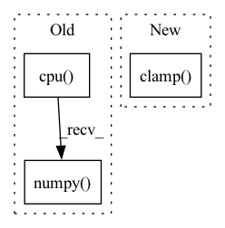

Pattern ID :6621
Before Change
// Naive implementation (not stable): 0.5 * torch.log((1 + x ) / (1 - x))
// We use numpy to avoid numerical instability
// Note: Using numpy, we do not keep the gradient
clipped_action = np.clip(action.cpu().numpy() , -0.99999997, 0.99999997)
return th.from_numpy(np.arctanh(clipped_action)).to(action.device)
def log_prob_correction(self, x):After Change
eps = th.finfo(y.dtype).eps
// Clip the action to avoid NaN
return TanhBijector.atanh(y.clamp(min=-1. + eps, max=1. - eps) )
def log_prob_correction(self, x):
// Squash correction (from original SAC implementation)In pattern: SUPERPATTERN
Frequency: 3
Non-data size: 3
Instances Fragment ID: 22964036
Project Name: dlr-rm/stable-baselines3
Commit Name: b9c20d443d7d0d719ba59635e9357f8a53ed98e9
Time: 2019-11-18
Author: antonin.raffin@dlr.de
File Name: torchy_baselines/common/distributions.py
M Class Name: TanhBijector
N Class Name: TanhBijector
M Method Name: inverse(1)
N Method Name: inverse(2)
M Parent Class: object
N Parent Class: object
M File Name: torchy_baselines/common/distributions.py
N File Name: torchy_baselines/common/distributions.py
M Start Line: 297
M End Line: 313
N Start Line: 397
N End Line: 399
Before Change
shape [3,H,W] (channels-first), and that it has values in [0,1].
assert isinstance(rgb_tensor, th.Tensor)
assert rgb_tensor.ndim == 3 and rgb_tensor.shape[0] == 0, rgb_tensor.shape
np_array = rgb_tensor.detach().cpu().numpy()
chans_last = np_array.transpose((1, 2, 0))
pil_image = Image.fromarray(chans_last)
dir_path = os.path.dirname(file_path)
if dir_path:After Change
assert isinstance(rgb_tensor, th.Tensor)
assert rgb_tensor.ndim == 3 and rgb_tensor.shape[0] == 3, rgb_tensor.shape
detached = rgb_tensor.detach()
rgb_tensor_255 = (detached.clamp( 0, 1) * 255).round()
chans_last = rgb_tensor_255.permute((1, 2, 0))
np_array = chans_last.detach().byte().cpu().numpy()
pil_image = Image.fromarray(np_array) Fragment ID: 22964035
Project Name: humancompatibleai/eirli
Commit Name: 6d94c5a0733daf525418f7589b8e34df333509ff
Time: 2020-12-01
Author: sam@qxcv.net
File Name: src/il_representations/utils.py
M Class Name: AnonimousClass
N Class Name: AnonimousClass
M Method Name: save_rgb_tensor(2)
N Method Name: save_rgb_tensor(2)
M Parent Class:
N Parent Class:
M File Name: src/il_representations/utils.py
N File Name: src/il_representations/utils.py
M Start Line: 117
M End Line: 119
N Start Line: 117
N End Line: 121
Before Change
shape [3,H,W] (channels-first), and that it has values in [0,1].
assert isinstance(rgb_tensor, th.Tensor)
assert rgb_tensor.ndim == 3 and rgb_tensor.shape[0] == 0, rgb_tensor.shape
np_array = rgb_tensor.detach().cpu().numpy()
chans_last = np_array.transpose((1, 2, 0))
pil_image = Image.fromarray(chans_last)
dir_path = os.path.dirname(file_path)
if dir_path:After Change
assert isinstance(rgb_tensor, th.Tensor)
assert rgb_tensor.ndim == 3 and rgb_tensor.shape[0] == 3, rgb_tensor.shape
detached = rgb_tensor.detach()
rgb_tensor_255 = (detached.clamp( 0, 1) * 255).round()
chans_last = rgb_tensor_255.permute((1, 2, 0))
np_array = chans_last.detach().byte().cpu().numpy()
pil_image = Image.fromarray(np_array) Fragment ID: 22964032
Project Name: humancompatibleai/eirli
Commit Name: 35df0073e364a3d277354f26ba75121e1e5b0f8f
Time: 2020-12-01
Author: sam@qxcv.net
File Name: src/il_representations/utils.py
M Class Name: AnonimousClass
N Class Name: AnonimousClass
M Method Name: save_rgb_tensor(2)
N Method Name: save_rgb_tensor(2)
M Parent Class:
N Parent Class:
M File Name: src/il_representations/utils.py
N File Name: src/il_representations/utils.py
M Start Line: 117
M End Line: 119
N Start Line: 117
N End Line: 121